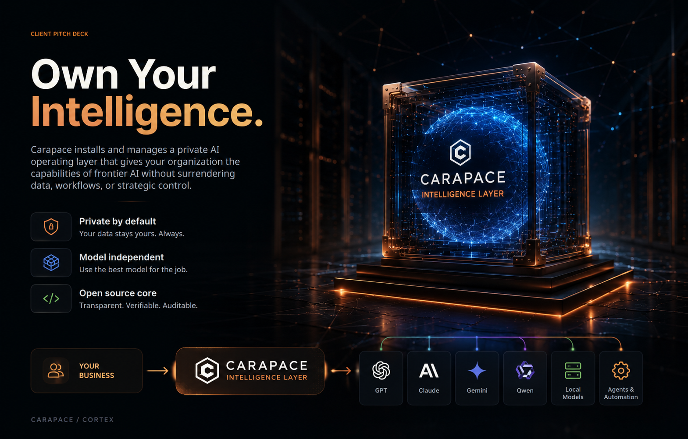
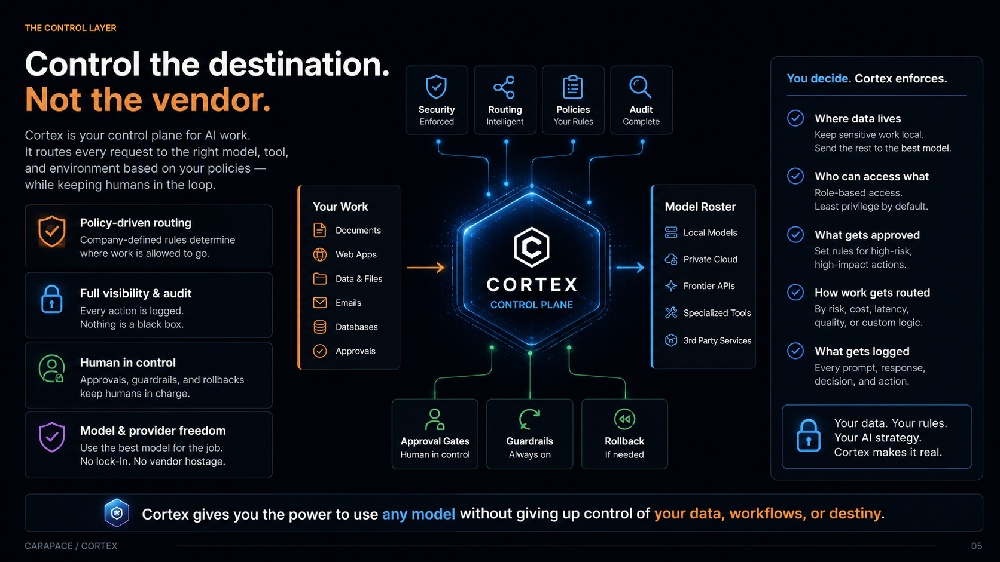
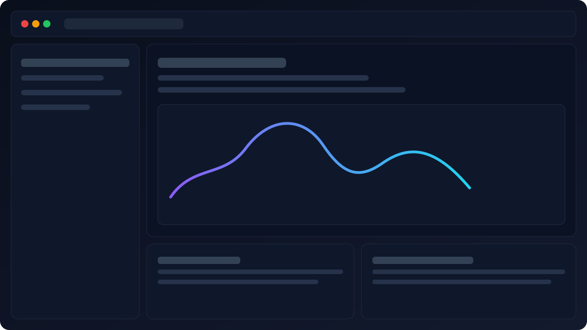
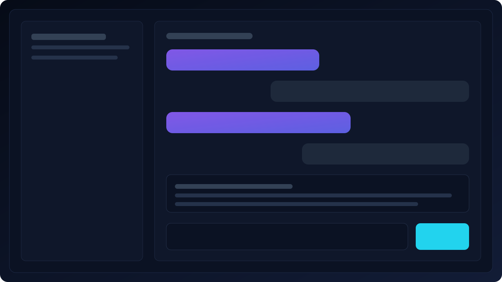
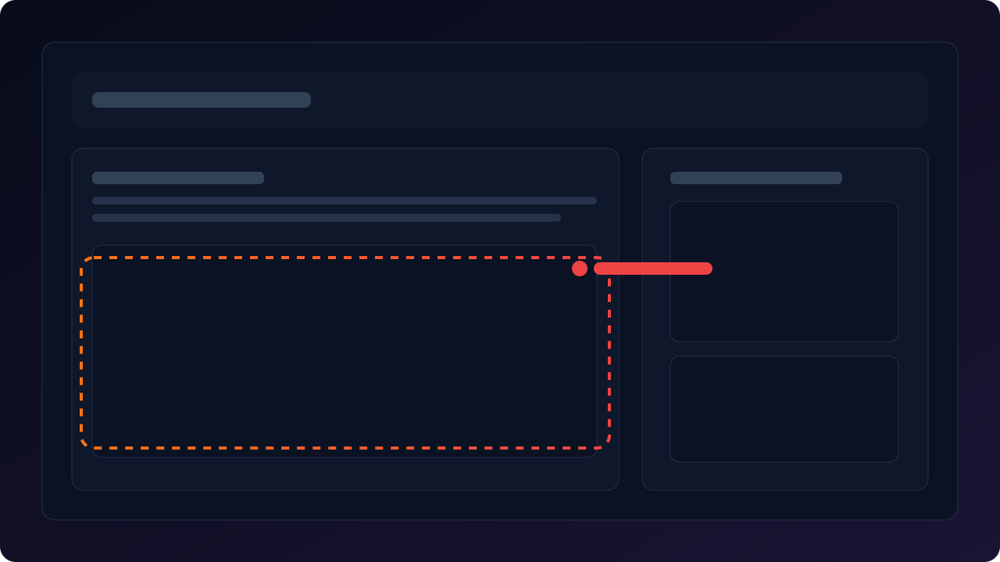
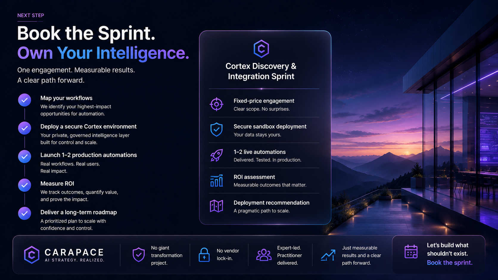

The model never sees your secrets
Credentials and sensitive values remain isolated until the exact moment of execution.
Carapace is the company. We build, install, and manage Cortex—the private operating layer between your business and the AI ecosystem.
Use the best available models, agents, and automation without surrendering your data, workflows, or strategic control.

Cortex is the software platform built by Carapace. Every request gets a governed destination based on capability, cost, speed, context, and policy.
The best automations are rarely futuristic. They are the recurring tasks that drain time, create risk, and block momentum.
Copying data, weekly updates, manual entry, and recurring document handling.
Tribal knowledge and processes that depend on one person being available.
Searching files, inboxes, proposals, and systems for information that already exists.
Approval chasing, handoffs, status checks, and work about work.
Corrections, reformatting, and rebuilding the same output again.
Some work should stay local. Some can use a frontier model. Some requires approval. You define the rules; Cortex enforces them.

Security is not a line in a sales deck. It is the ability to verify the data path, inspect routing, review approvals, and audit what happened.
Credentials and sensitive values remain isolated until the exact moment of execution.
Approval gates, guardrails, and rollback paths keep judgment where it belongs.
Policies, model choices, routing decisions, and actions can be reviewed and improved.
Operators get a calm control surface with the deeper state, provenance, and intervention points available underneath.

Operational state and active work in one clear command surface.

Shared context with human review and intervention close at hand.

Sensitive boundaries stay visible instead of disappearing into a black box.
No giant transformation project on faith. Start with controlled, measurable work and expand from evidence.
Find the leaks, bottlenecks, security requirements, and strongest automation candidates.
Build a private local, cloud, or hybrid environment with the right controls.
Track hours saved, costs reduced, adoption, and operational impact.
Turn proven wins into reusable systems across more workflows and teams.

One focused engagement. One to two real automations. Measurable results and a clear path forward.